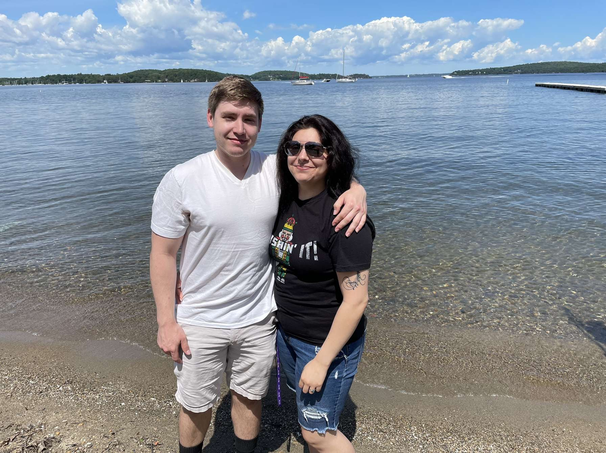

My name is Jadyn Gomez and I am a 21-year-old novice web developer who is passionate about learning about coding and
creating dynamic, user-friendly websites. I was born and raised in a bilingual household,
I am fluent in both English and Spanish, which has allowed me to connect with a
diverse range of people and cultures throughout my life.
After completing high school, I decided to pursue a phlebotomy degree and I loved it, but when I moved to New Jersey recently to live with my boyfriend Alex (who you can see in the picture above) no one was really hiring, so I decided to indulge in to a totally different degree.
I started taking an interest in web design and just code in general, which led me to enrolling in a web development bootcamp program. This intensive program
seems to be teaching me everything from basic HTML and CSS to advanced JavaScript and React development.
Throughout the course of the bootcamp so far, I believe I have proved to be a motivated and dedicated student, and I am
always eager to learn and improve my skills. I am consistently putting in the hours of my own time, often staying up late into the night to work on my projects and assignments.
In my free time, I enjoy playing videogames with Alex, reading, and spending time with my family and
friends. I also enjoy dabbling in drawing every now and again, mostly when it comes to drawing Pokemon for Alex or a heartfelt birthday card. Eventually,
I want to get around to traveling and enjoying the different cultures offered around the world.